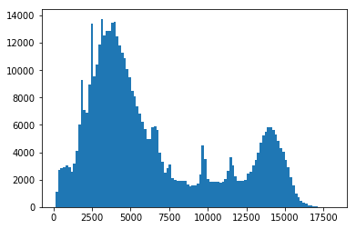

Lia Corrales, Kris Stern
Download a FITS table file from a URL
Open a FITS table file and view table contents
Make a 2D histogram with the table data
Close the FITS file after use
FITS, file input/output, table, numpy, matplotlib, histogram
This tutorial demonstrates the use of astropy.utils.data to download
a data file, then uses astropy.io.fits and astropy.table to open
the file. Lastly, matplotlib is used to visualize the data as a
histogram.
In[1]:
import numpy as np
from astropy.io import fits
from astropy.table import Table
from matplotlib.colors import LogNorm
# Set up matplotlib
import matplotlib.pyplot as plt
%matplotlib inline
The following line is needed to download the example FITS files used in this tutorial.
In[2]:
from astropy.utils.data import download_file
FITS files often contain large amounts of multi-dimensional data and tables.
In this particular example, we’ll open a FITS file from a Chandra observation of the Galactic Center. The file contains a list of events with x and y coordinates, energy, and various other pieces of information.
In[3]:
event_filename = download_file('http://data.astropy.org/tutorials/FITS-tables/chandra_events.fits',
cache=True)
Since the file is big, let’s open it with memmap=True to prevent RAM
storage issues.
In[4]:
hdu_list = fits.open(event_filename, memmap=True)
In[5]:
hdu_list.info()
Out[5]:
Filename: /home/circleci/.astropy/cache/download/py3/26e9900d731d08997d99ada3973f4592
No. Name Ver Type Cards Dimensions Format
0 PRIMARY 1 PrimaryHDU 30 ()
1 EVENTS 1 BinTableHDU 890 483964R x 19C [1D, 1I, 1I, 1J, 1I, 1I, 1I, 1I, 1E, 1E, 1E, 1E, 1J, 1J, 1E, 1J, 1I, 1I, 32X]
2 GTI 3 BinTableHDU 28 1R x 2C [1D, 1D]
3 GTI 2 BinTableHDU 28 1R x 2C [1D, 1D]
4 GTI 1 BinTableHDU 28 1R x 2C [1D, 1D]
5 GTI 0 BinTableHDU 28 1R x 2C [1D, 1D]
6 GTI 6 BinTableHDU 28 1R x 2C [1D, 1D]
In this case, we’re interested in reading EVENTS, which contains information about each X-ray photon that hit the detector.
To find out what information the table contains, let’s print the column names.
In[6]:
print(hdu_list[1].columns)
Out[6]:
ColDefs(
name = 'time'; format = '1D'; unit = 's'
name = 'ccd_id'; format = '1I'
name = 'node_id'; format = '1I'
name = 'expno'; format = '1J'
name = 'chipx'; format = '1I'; unit = 'pixel'; coord_type = 'CPCX'; coord_unit = 'mm'; coord_ref_point = 0.5; coord_ref_value = 0.0; coord_inc = 0.023987
name = 'chipy'; format = '1I'; unit = 'pixel'; coord_type = 'CPCY'; coord_unit = 'mm'; coord_ref_point = 0.5; coord_ref_value = 0.0; coord_inc = 0.023987
name = 'tdetx'; format = '1I'; unit = 'pixel'
name = 'tdety'; format = '1I'; unit = 'pixel'
name = 'detx'; format = '1E'; unit = 'pixel'; coord_type = 'LONG-TAN'; coord_unit = 'deg'; coord_ref_point = 4096.5; coord_ref_value = 0.0; coord_inc = 0.00013666666666667
name = 'dety'; format = '1E'; unit = 'pixel'; coord_type = 'NPOL-TAN'; coord_unit = 'deg'; coord_ref_point = 4096.5; coord_ref_value = 0.0; coord_inc = 0.00013666666666667
name = 'x'; format = '1E'; unit = 'pixel'; coord_type = 'RA---TAN'; coord_unit = 'deg'; coord_ref_point = 4096.5; coord_ref_value = 266.41519201128; coord_inc = -0.00013666666666667
name = 'y'; format = '1E'; unit = 'pixel'; coord_type = 'DEC--TAN'; coord_unit = 'deg'; coord_ref_point = 4096.5; coord_ref_value = -29.012248288366; coord_inc = 0.00013666666666667
name = 'pha'; format = '1J'; unit = 'adu'; null = 0
name = 'pha_ro'; format = '1J'; unit = 'adu'; null = 0
name = 'energy'; format = '1E'; unit = 'eV'
name = 'pi'; format = '1J'; unit = 'chan'; null = 0
name = 'fltgrade'; format = '1I'
name = 'grade'; format = '1I'
name = 'status'; format = '32X'
)
Now we’ll take this data and convert it into an astropy
table. While it’s possible
to access FITS tables directly from the .data attribute, using
Table
tends to make a variety of common tasks more convenient.
In[7]:
evt_data = Table(hdu_list[1].data)
For example, a preview of the table is easily viewed by simply running a cell with the table as the last line:
In[8]:
evt_data
Out[8]:
Table length=483964| time | ccd_id | node_id | expno | chipx | chipy | tdetx | tdety | detx | dety | x | y | pha | pha_ro | energy | pi | fltgrade | grade | status [32] |
|---|---|---|---|---|---|---|---|---|---|---|---|---|---|---|---|---|---|---|
| float64 | int16 | int16 | int32 | int16 | int16 | int16 | int16 | float32 | float32 | float32 | float32 | int32 | int32 | float32 | int32 | int16 | int16 | bool |
| 238623220.9093583 | 3 | 3 | 68 | 920 | 8 | 5124 | 3981 | 5095.641 | 4138.995 | 4168.0723 | 5087.772 | 3548 | 3534 | 13874.715 | 951 | 16 | 4 | False .. False |
| 238623220.9093583 | 3 | 1 | 68 | 437 | 237 | 4895 | 3498 | 4865.567 | 4621.1826 | 3662.1968 | 4915.9336 | 667 | 629 | 2621.1938 | 180 | 64 | 2 | False .. False |
| 238623220.9093583 | 3 | 2 | 68 | 719 | 289 | 4843 | 3780 | 4814.835 | 4340.254 | 3935.2207 | 4832.552 | 3033 | 2875 | 12119.018 | 831 | 8 | 3 | False .. False |
| 238623220.9093583 | 3 | 0 | 68 | 103 | 295 | 4837 | 3164 | 4807.3643 | 4954.385 | 3324.4644 | 4897.2754 | 831 | 773 | 3253.0364 | 223 | 0 | 0 | False .. False |
| 238623220.9093583 | 3 | 1 | 68 | 498 | 314 | 4818 | 3559 | 4788.987 | 4560.3276 | 3713.6343 | 4832.735 | 3612 | 3439 | 14214.382 | 974 | 64 | 2 | False .. False |
| 238623220.9093583 | 3 | 3 | 68 | 791 | 469 | 4663 | 3852 | 4635.4526 | 4268.053 | 3985.8496 | 4645.93 | 500 | 438 | 1952.7239 | 134 | 0 | 0 | False .. False |
| 238623220.9093583 | 3 | 3 | 68 | 894 | 839 | 4293 | 3955 | 4266.642 | 4165.3203 | 4044.5469 | 4267.605 | 835 | 713 | 3267.5334 | 224 | 0 | 0 | False .. False |
| 238623220.9093583 | 3 | 3 | 68 | 857 | 941 | 4191 | 3918 | 4164.815 | 4202.2256 | 3995.9353 | 4170.818 | 975 | 804 | 3817.0366 | 262 | 0 | 0 | False .. False |
| 238623220.9093583 | 3 | 3 | 68 | 910 | 959 | 4173 | 3971 | 4146.9937 | 4149.364 | 4046.3376 | 4146.9106 | 576 | 446 | 2252.7295 | 155 | 0 | 0 | False .. False |
| 238623220.9093583 | 3 | 3 | 68 | 961 | 962 | 4170 | 4022 | 4144.1284 | 4098.4976 | 4096.515 | 4138.09 | 1572 | 1354 | 6154.1094 | 422 | 0 | 0 | False .. False |
| ... | ... | ... | ... | ... | ... | ... | ... | ... | ... | ... | ... | ... | ... | ... | ... | ... | ... | ... |
| 238672393.54971933 | 1 | 3 | 15723 | 933 | 199 | 4933 | 5040 | 4902.907 | 3082.4956 | 5212.4995 | 4766.2295 | 1222 | 1181 | 4819.8286 | 331 | 0 | 0 | False .. False |
| 238672393.54971933 | 1 | 2 | 15723 | 596 | 412 | 4720 | 4703 | 4691.51 | 3418.9893 | 4853.5117 | 4595.8037 | 3142 | 3020 | 12536.866 | 859 | 10 | 6 | False .. False |
| 238672393.54971933 | 1 | 3 | 15723 | 1000 | 608 | 4524 | 5107 | 4494.713 | 3015.7185 | 5230.886 | 4353.018 | 658 | 585 | 2599.5652 | 179 | 0 | 0 | False .. False |
| 238672393.54971933 | 1 | 1 | 15723 | 270 | 917 | 4215 | 4377 | 4188.3325 | 3743.5957 | 4472.07 | 4134.221 | 3861 | 3463 | 15535.768 | 1024 | 16 | 4 | False .. False |
| 238672393.54971933 | 1 | 0 | 15723 | 232 | 988 | 4144 | 4339 | 4117.6147 | 3781.8774 | 4425.75 | 4068.4873 | 1680 | 1499 | 6653.0815 | 456 | 0 | 0 | False .. False |
| 238672393.59075934 | 0 | 1 | 15723 | 366 | 103 | 3164 | 4766 | 3140.9048 | 3356.3208 | 4733.6816 | 3048.5664 | 3621 | 3602 | 14362.482 | 984 | 0 | 0 | False .. False |
| 238672393.59075934 | 0 | 3 | 15723 | 937 | 646 | 3707 | 4195 | 3681.2122 | 3925.5452 | 4231.8354 | 3651.9724 | 3717 | 3486 | 14653.954 | 1004 | 8 | 3 | False .. False |
| 238672393.59075934 | 0 | 1 | 15723 | 406 | 687 | 3748 | 4726 | 3723.4014 | 3396.252 | 4762.421 | 3631.7224 | 1676 | 1536 | 6652.827 | 456 | 0 | 0 | False .. False |
| 238672393.59075934 | 0 | 1 | 15723 | 354 | 870 | 3931 | 4778 | 3906.07 | 3344.775 | 4834.99 | 3807.0835 | 2436 | 2165 | 9672.882 | 663 | 16 | 4 | False .. False |
| 238672393.63179934 | 6 | 1 | 15723 | 384 | 821 | 3259 | 2523 | 3230.9204 | 5596.8496 | 2519.2202 | 3401.0327 | 491 | 356 | 1875.9359 | 129 | 0 | 0 | False .. False |
We can extract data from the table by referencing the column name. Let’s try making a histogram for the energy of each photon, which will give us a sense for the spectrum (folded with the detector’s efficiency).
In[9]:
energy_hist = plt.hist(evt_data['energy'], bins='auto')
Out[9]:
We’ll make an image by binning the x and y coordinates of the events into a 2D histogram.
This particular observation spans five CCD chips. First, we determine the events that only fell on the main (ACIS-I) chips, which have number ids 0, 1, 2, and 3.
In[10]:
ii = np.in1d(evt_data['ccd_id'], [0, 1, 2, 3])
np.sum(ii)
Out[10]:
434858
This method allows us to create an image without stretching:
In[11]:
NBINS = (100,100)
img_zero, yedges, xedges = np.histogram2d(evt_data['x'][ii], evt_data['y'][ii], NBINS)
extent = [xedges[0], xedges[-1], yedges[0], yedges[-1]]
plt.imshow(img_zero, extent=extent, interpolation='nearest', cmap='gist_yarg', origin='lower')
plt.xlabel('x')
plt.ylabel('y')
# To see more color maps
# http://wiki.scipy.org/Cookbook/Matplotlib/Show_colormaps
Out[11]:
Text(0, 0.5, 'y')
In[12]:
NBINS = (100,100)
img_zero_mpl = plt.hist2d(evt_data['x'][ii], evt_data['y'][ii], NBINS,
cmap='viridis', norm=LogNorm())
cbar = plt.colorbar(ticks=[1.0,3.0,6.0])
cbar.ax.set_yticklabels(['1','3','6'])
plt.xlabel('x')
plt.ylabel('y')
Out[12]:
Text(0, 0.5, 'y')
When you’re done using a FITS file, it’s often a good idea to close it. That way you can be sure it won’t continue using up excess memory or file handles on your computer. (This happens automatically when you close Python, but you never know how long that might be…)
In[13]:
hdu_list.close()
Make a scatter plot of the same data you histogrammed above. The plt.scatter function is your friend for this. What are the pros and cons of doing it this way?
In[None]:
Try the same with the plt.hexbin plotting function. Which do you think looks better for this kind of data?
In[None]:
Choose an energy range to make a slice of the FITS table, then plot it. How does the image change with different energy ranges?
In[None]: